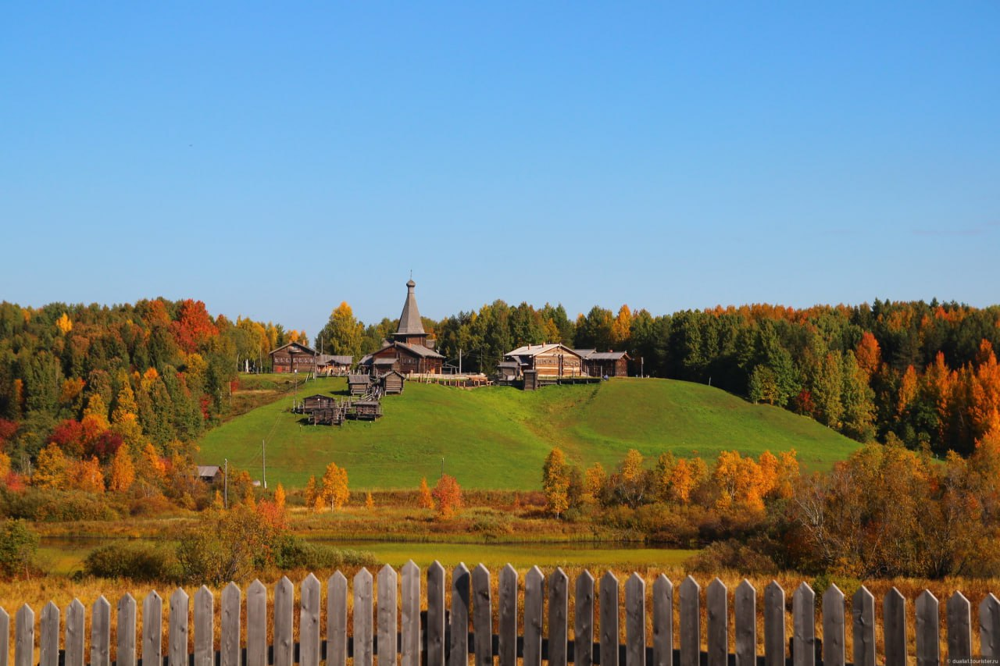
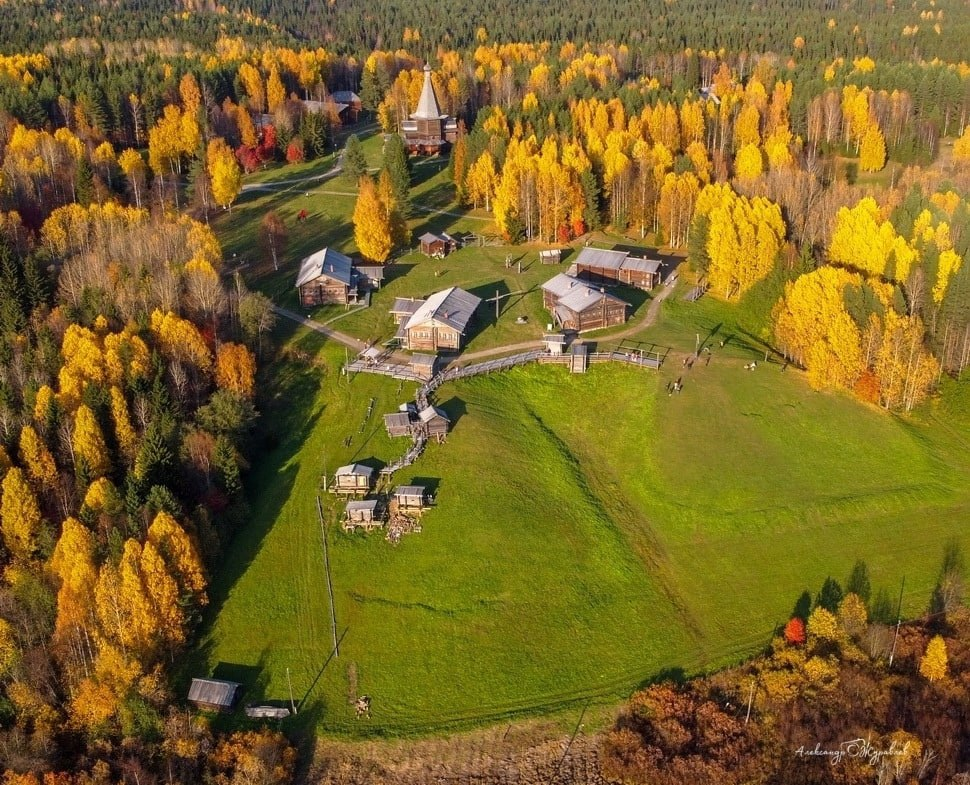
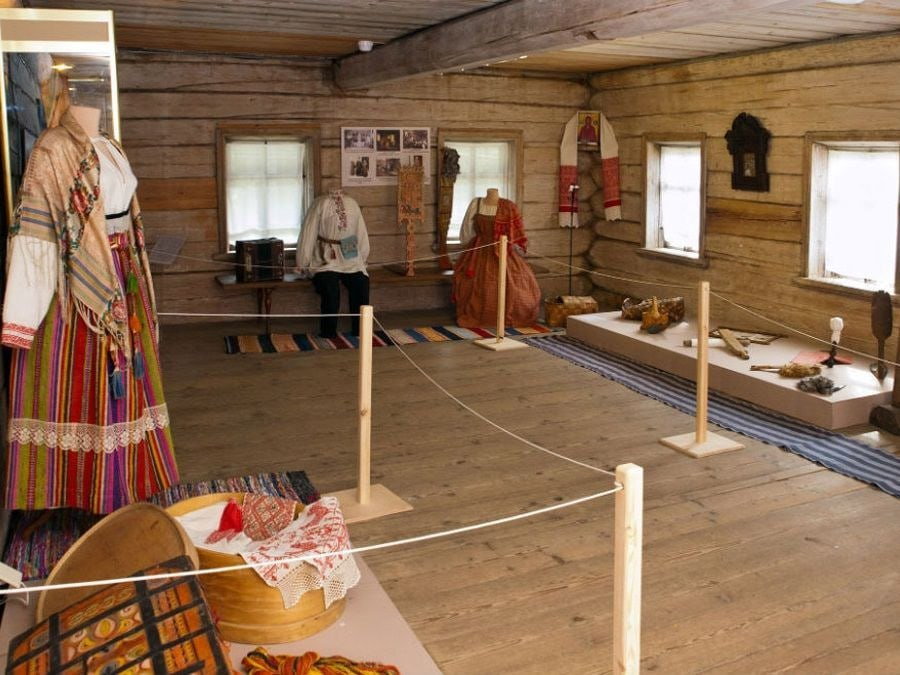
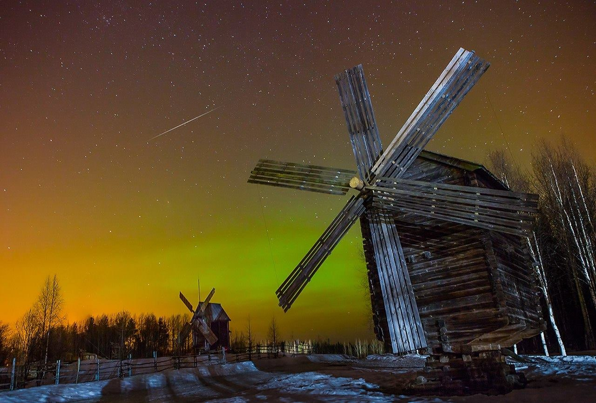

АРХИТЕКТУРНО-ЛАНДШАФТНАЯ ЭКСПОЗИЦИЯ В «МАЛЫХ КОРЕЛАХ»
Музей «Малые Корелы» — это уникальное собрание памятников деревянного зодчества под открытым небом. Здесь, в 25 км от Архангельска, на территории около 140 га сосредоточено 120 самых разноплановых строений — церквей, часовен, колоколен, крестьянских усадеб, мельниц, амбаров, построенных в XVI — начале XX вв.
Музей «Малые Корелы» — это неповторимый синтез ландшафта, памятников и народного искусства. Каждый посетитель находит здесь то, чего ему так не хватает в суете современной городской жизни: тишину скромной северной природы, тепло деревянных стен поморских жилищ и храмов, очищающие душу колокольные звоны, удалое веселье крестьянского праздника...
Музей «Малые Корелы» — это собиратель и хранитель самобытного нематериального наследия Русского Севера. Его на территории музея представляют фольклорно-этнографический театр «Новиця», мастера народных промыслов и ремёсел.
Музей назван по имени населенного пункта «Малые Корелы», находящегося неподалеку. Но довольно часто наименование музея пишут как «Малые Карелы», что вносит определенную путаницу. Тем не менее правильное написание именно через «о» — Корелы.